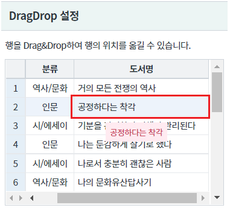
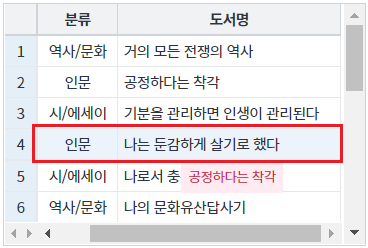
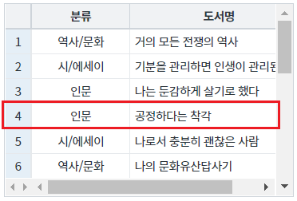
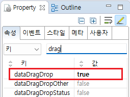
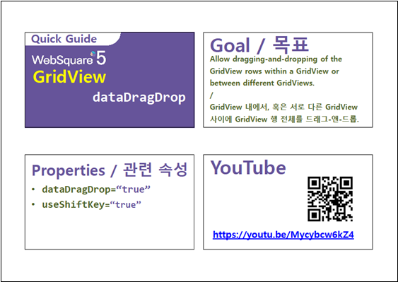

GridView의 Drag&Drop 설정 예제입니다. GridView의 행의 데이터를 Drag&Drop하여 이동할 수 있습니다. 이 기능은 GridView 내부 또는 GridView와 GridView 간의 DragDrop만 지원됩니다.
GridView의 DragDrop 기능 미설정 (기본)
GridView의 DragDrop 기능 설정
2번째 행의 도서명 "공정하다는 착각"을 Drag합니다.
[브라우저(Chrome) 실행 예시]

4번째 행 위에서 Drop합니다.(도서명 "나는 둔감하게 살기로 했다")
[브라우저(Chrome) 실행 예시]

2번째 행(도서명 "공정하다는 착각")이 4번째 행(도서명 "나는 둔감하게 살기로 했다") 아래로 이동됩니다.
실행 결과는 2번째 행(도서명 "공정하다는 착각")이 이동됨에 따라 2번째 행이 4번째 행으로 위치됩니다.
[브라우저(Chrome) 실행 예시]

GridView와 연결된 DataList 생성 및 연결 방법은 생략되었습니다.
GridView의 속성을 정의합니다.
[필수] dataDragDrop="true" //[default:false, true] 동일 gridView 또는 서로 다른 gridView 간의 데이터 드래그-앤-드롭을 허용.
그림 1.웹스퀘어5 SP5 스튜디오의 Property View(속성창) 예시

[소스 코드 예시]
<!-- gridView 의 소스 본문 예시 --> <w2:gridView dataDragDrop="true" dataList="data:dlt_books_2"> <!-- 중략 --> </w2:gridView>
dataDragDrop
[웹스퀘어5 SP5 개발 가이드] GridView
링크 : https://docs1.inswave.com/sp5_user_guide/86bdcf48029b958b
[웹스퀘어5 SP5 개발 가이드] GridView 행 드래깅
링크 : https://docs1.inswave.com/sp5_user_guide/86bdcf48029b958b#146e3c43f7e89d7e
[웹스퀘어5 SP5 개발 가이드] GridView dataDragDrop
링크 : https://docs1.inswave.com/sp5_user_guide/86bdcf48029b958b#5c3a5ccb52ad7f71
GridView dataDragDrop
링크 : https://youtu.be/Mycybcw6kZ4
